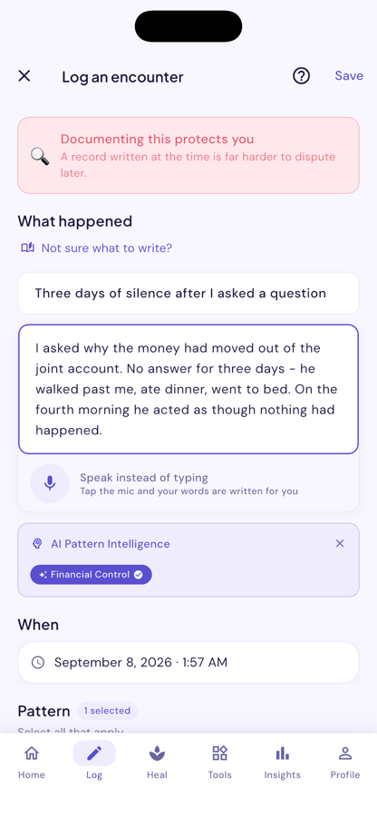
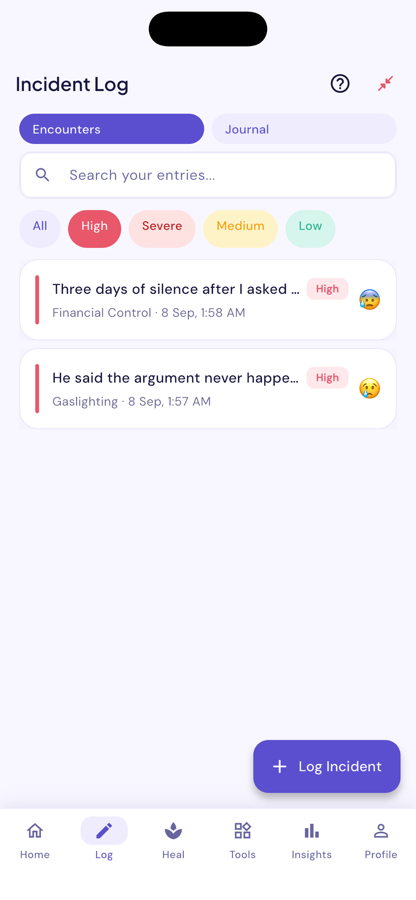
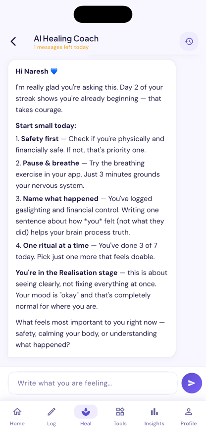
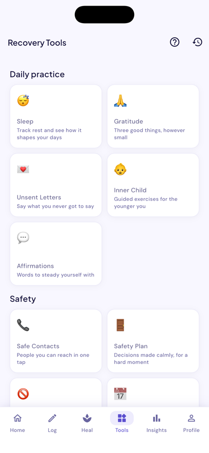

A private space to document what happened, recognise the patterns behind it, and rebuild at your own pace.
iPhone and iPad · English, हिन्दी, తెలుగు




Built around one idea: that a clear record of what actually happened is the thing coercive control works hardest to take away.
Write down what happened while you still remember it clearly. Dated, searchable, and yours.
Analysis of a conversation or an incident, naming the tactics it is consistent with — and what you could say back.
236 documented tactics across 20 dimensions, cross-referenced from what you log, so a pattern has a name and a shape.
Photos, documents and voice notes, encrypted on your device before they are stored.
Grounding and breathing for the moments when thinking clearly is not an option. Mood check-ins, rituals, and a streak that asks nothing.
Documents, financial groundwork and legal steps, laid out in order, for whenever that day comes — or does not.
The people this app is for are often being watched. That shaped how it was built, not just what it says.
Journal entries, incidents and vault files are encrypted on your device. Add a passphrase and a new phone can open them; without it, the key never leaves this one.
Links open inside the app rather than in Safari, so reading a legal-aid or helpline page leaves nothing behind on the device.
Continue privately with no email at all. Add one later if you want your entries to survive a new phone.
Every new account gets two days of everything, including ten AI requests, before choosing anything.
Two days, all features, 10 AI requests. No card.
Logging, the Codex, recovery tools and the vault.
Adds deeper pattern analysis and insight over time.
Everything, including the AI coach and preparation tools.
Bloom Again is a documentation and self-support tool. It is not therapy, not medical or legal advice, and not an emergency service. It never contacts anyone on your behalf.
If you are in immediate danger, contact your local emergency number.